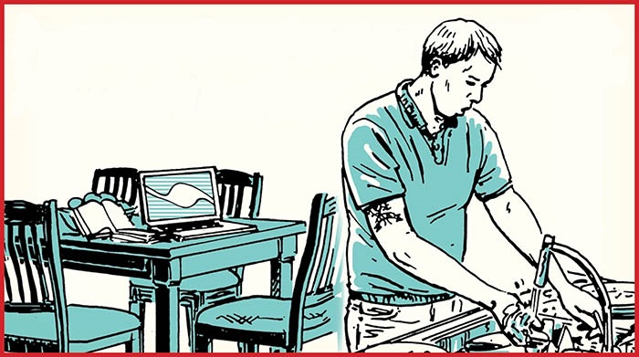

Home
Productively Procrastinate

Description
This is the perfect recipe for those who felt they have procrastinated too much(as if too much procrastination is even a thing :D)
and feel the need to get up and pick up their life. When you have that backlog of tasks, this recipe will zest up you life with
brimming productivity, yet you won't ever have to get to the tasks you were truly dreading.
Ingredients
- Fast approaching deadlines
- Backlog of tasks, from inconsequential to the most vital
- A dash of an unmovable-object's inertia
Instructions
- Keep doing whatever you were doing, really, finish reading this recipe, re-read it a few times even. You want to be sure to
solve your proccrastination habbits afterall!
- Identify the most inconsequential tasks and make a list.
- Work through the list starting from the most inconsequential. Try starting with washing those dishes.
Maybe sort your socks, what if you need to go out to do something important? Wouldn't want to be late looking for socks that match!
Read that self-help book you have been meaning to read. So that you can feel inspired, motivated and productive without
having to get to the vital tasks!
- STOP! Just before you get to the vital ones.
- Hmm... now lets go back to watching
YouTube or playing some
video games.
You have earned you reward afterall!
- Enjoy the never ending paradoxical sweetness of productive procrastination!
In addition to the mind bending flavours, this recipe offers never-ending health benefits as well. You can read up all about them
here and
here!
Other recipes